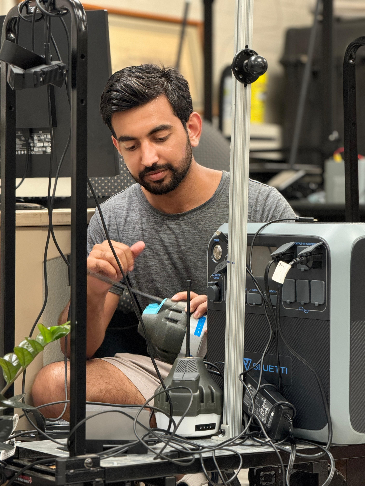

Robotics & AI Engineer specializing in autonomous systems, computer vision, and deep learning for precision agriculture. MS @ Auburn University with a perfect 4.0 GPA.
I'm Faraz Ahmad, a Robotics & AI Engineer with 4+ years of experience building full-stack autonomous systems. I hold an M.S. in Biosystems Engineering from Auburn University (4.0 GPA) and a B.S. in Mechanical Engineering from GIKI, Pakistan (graduated with distinction).
My expertise spans the full robotics pipeline: from perception and sensor fusion (RGB, depth, hyperspectral, LiDAR, IMU, RTK-GPS) to navigation and control (ROS/ROS2, SLAM, path planning, reinforcement learning) to edge deployment (NVIDIA Jetson Orin, TensorRT, real-time inference). I've built robots that autonomously navigate nursery rows, count and assess thousands of plants, and deliver actionable insights to farmers.
My work earned the Excellence in Productivity Award at the FIRA World Ag Robotics Forum 2024 in Sacramento, competing against teams from around the globe. I also hold 2 pending patents in AI-driven agricultural analytics and have multiple publications in top venues.

Perception, navigation, control & deployment
PyTorch, YOLO, RL, GCNs, SAM, DINO
NVIDIA Jetson Orin, TensorRT inference
FIRA 2024 Champion, research awards
Leading research on autonomous navigation for the Amiga farm-ng robot. Automating plant counting, quality assessment, and inventory management in large commercial nurseries. Designed deep learning pipelines for detection, segmentation, and tracking using PyTorch/YOLO. Built modular ROS1/ROS2 stacks combining perception, localization, planning, and control. Validated in Gazebo and Isaac Sim before outdoor field deployment on NVIDIA Jetson Orin.
Led end-to-end pipeline development for strawberry data collection, storage, analysis, and database management. Built PyTorch vision models for strawberry detection and yield estimation. Developed a farmer-facing web dashboard for yield prediction, treatment summaries, and actionable insights. Co-designed and validated a predatory mite applicator robot for precision pest management.
Collaborated on optimizing 3D printer design and reliability using computer vision and machine learning. Developed a spaghetti detection system to prevent filament failures. Contributed to the launch of BTT Pi for remote 3D printer monitoring via Cloud3dPrint platform.
Built a Medial Cubital Vein detection model using TensorFlow and YOLOv5. Reduced training time from 2 days to 30 minutes while achieving 97% accuracy.
Designed and led development of Florabot, an autonomous ground robot that performs plant counting, quality assessment, and row navigation in ornamental nurseries. Integrated RGB, depth, GPS/RTK, and ultrasonic sensing with ROS-based control, running real-time inference on NVIDIA Jetson Orin. Won the Excellence in Productivity Award at the FIRA World Ag Robotics Forum 2024.
Created a digital twin system generating synthetic crop data to enable zero-shot and few-shot model training. Scales AI model development while reducing dependency on extensive field labeling.
Designed a fully automated 2-DOF overhead gantry camera system for greenhouse plant phenotyping. Integrating RGB, depth, and hyperspectral imaging with programmable motion control.
Deep reinforcement learning and SLAM-based path-planning and obstacle-avoidance for a holonomic collaborative mobile robot. Modeled in MATLAB/Simulink, trained in Python, validated in Gazebo/ROS Noetic.
Full-stack pipeline: RGB data collection, PyTorch model training, Jetson Orin deployment for yield prediction. Built a farmer-facing web dashboard and co-developed a predatory mite applicator.
Cloud-enabled plant segmentation and tracking framework for ornamental nursery inventory management. Long-term tracking across multiple robot passes for scalable plant inventory.
2 published papers, 5 papers in progress, and 2 pending patents.
Farm Robotics Challenge — FIRA World Ag Robotics Forum 2024, Sacramento
2025 Graduate Engineering Research Showcase, Auburn University
Harnessing Data Science and AI in Production Agriculture, 2025
Auburn University, 2025
GIKI — 4x Dean's Honor Roll Recipient
Full merit scholarship for B.S. at GIKI
The Quaid-e-Azam College, Swabi
Led the mechanical division of the university robotics team at GIKI
6-month professional certificate
5-course specialization by Andrew Ng
Complete ML specialization in Python
Advanced CV & deep learning program
By Andrew Ng — MATLAB
Data analysis & visualization in MATLAB
Foundations of MATLAB programming
7-week comprehensive Python course
I'm actively looking for Robotics & AI engineering roles where I can apply my expertise in autonomous systems, computer vision, and deep learning. Let's connect and discuss how I can contribute to your team.
Email Me+1 (334) 663-7026
Auburn, Alabama, USA